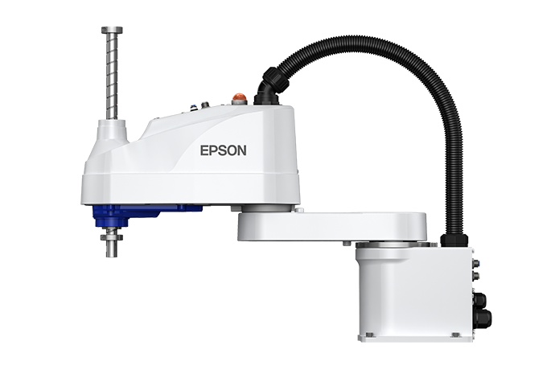

Robô SCARA

SCARA significa Selective Compliance Assembly Robot Arm. É um braço robótico com dois eixos rotativos horizontais e um eixo vertical linear, ideal para tarefas rápidas e precisas no plano horizontal.
Conceito
O robô SCARA foi desenvolvido para operações de montagem que exigem alta velocidade no plano horizontal e rigidez no eixo vertical. Sua estrutura em formato de "braço duplo" permite movimentos rápidos e repetitivos, sendo um dos tipos de robô mais utilizados em linhas de montagem eletrônica e embalagem.
Princípio de funcionamento
O robô possui duas juntas rotativas paralelas, que se movem no plano horizontal (X e Y), e uma junta linear no punho, responsável pelo movimento vertical (Z) e por uma rotação adicional do efetuador. Essa configuração torna o robô rígido na direção vertical, mas complacente (flexível) na direção horizontal, o que facilita a inserção de peças, como conectores e parafusos, mesmo com pequenos desalinhamentos.
Características técnicas
Alta velocidade de ciclo, ideal para operações repetitivas
Repetibilidade tipicamente entre ±0,01 mm e ±0,05 mm
Cargas úteis geralmente entre 1 kg e 20 kg
Área de trabalho circular ou semicircular
4 eixos de movimento (X, Y, Z e rotação do punho)
Programação simplificada, própria para montagem
Aplicações industriais
Montagem de componentes eletrônicos
Inserção de peças e conectores
Embalagem e pick and place em alta velocidade
Dispensação de líquidos e adesivos
Testes e inspeção de qualidade
Aparafusamento automatizado
Integração com automação e IoT
Robôs SCARA costumam operar integrados a sistemas MES (Manufacturing Execution System) por meio de redes industriais como Ethernet/IP ou PROFINET, recebendo ordens de produção e reportando o status de cada ciclo em tempo real.
A integração com câmeras de visão computacional conectadas à mesma rede permite inspeção de qualidade automatizada logo após a montagem, enquanto os dados de ciclo alimentam painéis de eficiência (OEE) usados na tomada de decisão da fábrica.
Modelos comerciais
- Ciclos de montagem em alta velocidade
- Cargas de até cerca de 6 kg
- Controlador compacto integrado
- Ampla faixa de alcances de braço
- Alta repetibilidade para eletrônica
- Compatível com controladores de rede industrial
- Alta rigidez estrutural
- Opções para ambientes limpos (salas limpas)
- Elevada velocidade de ciclo